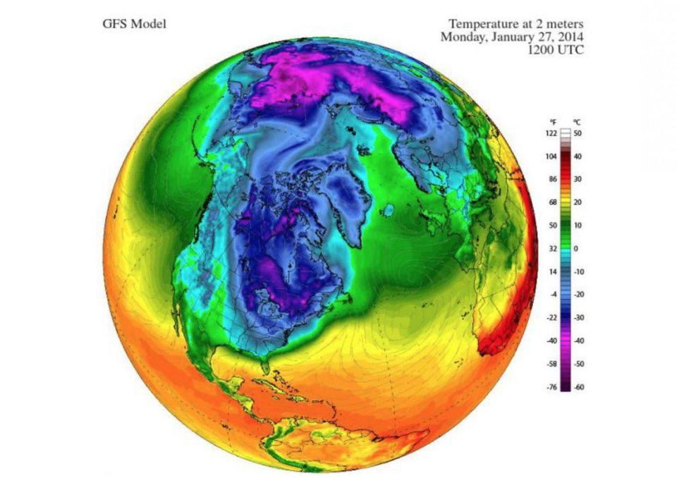

Defying Climate Change, Southeast US Is Getting Colder Instead Of Warmer Via Polar Vortex
by Trevor Nace
Counter to what most expected in a globally warming planet, the Southeast of the U.S. has been getting colder during winter and spring months instead of warmer. New research shines a light on the long noticed trend of cooling in the Southeast U.S. during winter and spring months compared to the rest of the continental United States.
The culprit, as it appears, is the polar vortex which allows the flow of arctic air from the north to move southward. The zone of colder than expected winter temperatures, named the U.S. warming hole, sits over the Southeast through spring until it migrates to the Midwest during summer months.
Warming temperatures in the Arctic and melting of Arctic sea ice appear to initiate the movement of the polar vortex southward through a wavier shaped jet stream. The Arctic has warmed twice as fast as the northern mid-latitudes, setting up an imbalance in global circulation. The temperature difference (gradient) between the high latitudes (Arctic) and mid-latitudes (Southeast U.S.) traditionally acted as a boundary to keep out the polar jet stream. As temperatures disproportionately rise in high latitudes, that boundary is weakened and polar winds are able to escape southward easier. ... continue to full article
